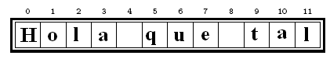

- Características generales del lenguaje.
- Variables y tipos de datos básicos
- Estrcuturas de control: if y while
- Manejo de cadenas.
- Listas
- Tuplas
- Conjuntos
- for
- Usando el modo interactivo obteniendo una respuesta por cada línea. Sesión interactiva o
- Escribiendo el código de un programa en un archivo de texto y luego ejecutándolo.
- NO se declaran. Se crean cuando se les asigna un valor.
- Son case sensitive
- Números: Enteros, Flotantes.
- Booleanos
- Cadenas. Definición.
- Condicional: sentencia if
- Iteración: sentencia while
#Utilizo una función que genera números aleatorios en un cierto rango import random numero_compu= random.randrange(100) #Inicializo la variable que cuenta la cantidad de oportunidades y comienzo #con el juego cont=1 while cont < 11: #Pido ingresar el número al usuario ingresa_numero= int(input('Ingresa el número que pensó la compu en un rango de 0 a 99. ')) #Evalúo si es le número generado por la computadora if ingresa_numero == numero_compu: print ('Ganaste! y lo hiciste en', cont, 'intentos!') cont= 13 else: print ('No.. ese número no es... Sigue pensando..') cont= cont + 1 #Consulto si uso todos los intentos.. if cont == 11: print ('\n Perdiste :(\n La compu pensó en el número:', numero_compu)
Pensemos en cómo modificar el programa para que ofrezca, al jugador, ayudas a través de "pistas".
cadena = 'Hola que tal'
print(cadena[0]) print(cadena[len(cadena)])
¿Qué les parece que imprime?
cadena = 'La casa es grande' print(cadena[5:8]) print(cadena[9:-1])
¿Se puede hacer cadena[5] = 'm'?
- upper() lower() capitalize()
- find() index() ...
lis = [ 22, True, 'una lista', [1,7] ]
lis = [ 22, True, 'una lista', [1,7] ] print( lis[3][1] ) print( lis[-3] )
¿Se puede hacer..?
lis[1] = False
lis = [ 22, True, 'una lista', [1,7] ] print( lis[1:3] ) print( lis[ :2] ) print( lis[2:] )
- lis2 = lis1 hace que el lis2 apunte a lis1 (ambos apuntan a la misa zona de memoria)
- lis2 = lis[:] hace que dos direcciones de memoria tengan el mismo contenido
lista = [ 22, True, 'una lista', [1,7] ] lis1 = lista.copy()
lis1 = [ 22, True, 'una lista', [1,7] ]
lis2 = lis1 + [9,8,7] => lis2 quedaría: [22, True, 'una lista', [1,7],9,8,7]
lis2 = lis1 * 2 => lis2 quedaría:[22, True, 'una lista', [1,7], 22, True, 'una lista', [1,7]]
lista = [[1 , 2]] * 3 lista [0][1] = 'cambio' print (lista)
Aclarar que imprime la segunda opción porque el * repite la misma lista, con lo cuál queda almacenado punteros a las mismas No sucede lo mismo, en el segundo caso los elementos son todos diferentes, en el primer caso es el mismo objeto referenciado 3 veces
extend() append() index()
remove() pop() count() etc.
Antes de continuar con las estructuras de datos restantes vemos la última estructura de control
for variable in serie_de_valores: acción acción ... acción
Ejemplo
dias = ["domingo", "lunes", "martes", "miércoles", "jueves", "viernes", "sábado"] for d in dias: print(d)
- 1 argumento: range(5) => devuelve [0,1,2,3,4]
- Comienza con 0 hasta el argumento - 1
- 2 argumentos: range(2,5) => devuelve [2,3,4]
- Comienza con el argumento1 hasta el argumento2 - 1
- 3 argumentos: range(2,6,2) => devuelve [2,4]
- Comienza con el argumento1 hasta el argumento2 – 1, pero con un incremento de 2
i = valor inicial while i <= valor final: acciones i += 1
for i in range (valor incial, final + 1): acciones
dias = ["domingo", "lunes", "martes", "miércoles", "jueves", "viernes", "sábado"] for d in range(7): print("Elemento ", d, "de la lista es: ", dias[d])
- una sola lista de palabras y
- con tres posibilidades de perder
tupla1 = 1,2 tupla1 = (1,2)
tupla1 = (1, 2)
- Formas de acceder a sus elementos, uso de []
- tupla1[1] => devuelve 2
- Son INMUTABLES, su tamaño y los valores de las mismas NO pueden cambiar
tupla1 = (1, 2) tupla[1] = 10 #Esto daría error!!
t = (1, 2, 3, "hola") print(t[1:4]) t_nueva = ("nueva",) + t[1:3] print(t_nueva)
t_nueva=('nueva') + t[1:3]
| Space | Forward |
|---|---|
| Right, Down, Page Down | Next slide |
| Left, Up, Page Up | Previous slide |
| G | Go to slide number |
| P | Open presenter console |
| H | Toggle this help |